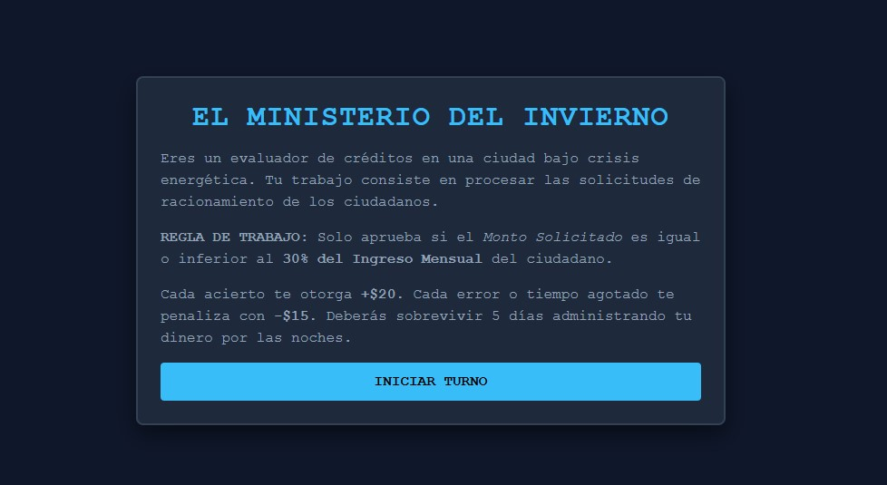
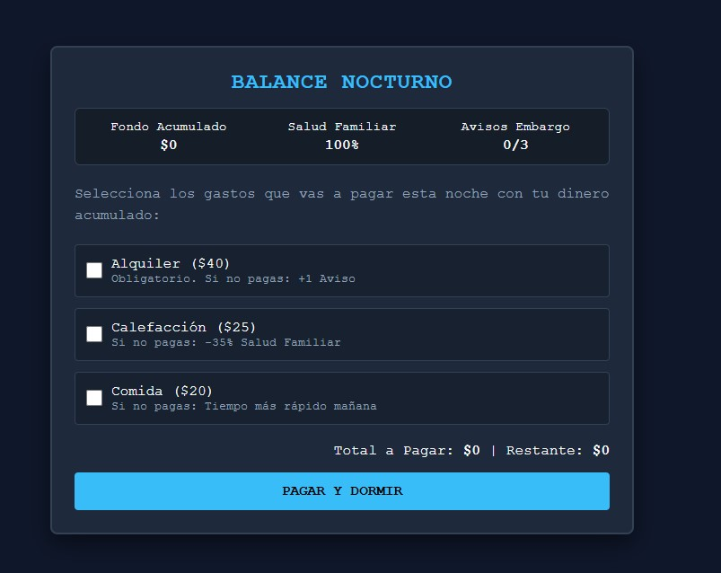
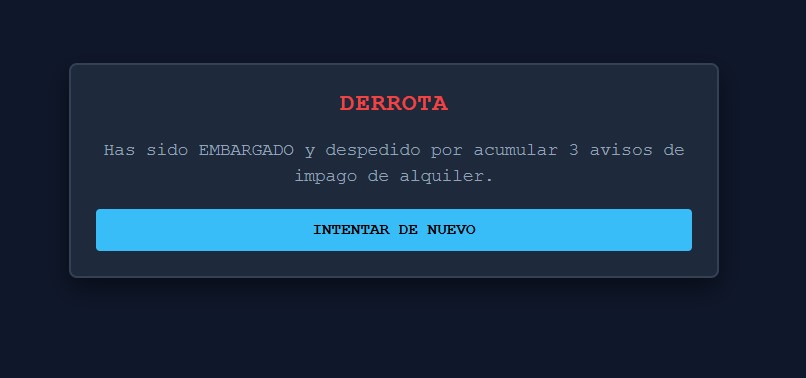

El Ministerio del Invierno
Simulacion de trabajo y gestion financiera en una ciudad distopica
Descripcion
El Ministerio del Invierno es un videojuego educativo de simulacion y gestion de recursos ambientado en una ciudad distopica afectada por una crisis energetica.
El jugador trabaja como analista de creditos y debe procesar solicitudes economicas bajo presion. Al finalizar cada jornada laboral, debe administrar el dinero ganado para cubrir los gastos esenciales de su familia. Cada decision tiene consecuencias.
Concepto y Premisa
El juego propone sobrevivir durante 5 dias, mantener a la familia con salud y evitar acumular tres avisos de embargo.
- Publico objetivo: Jovenes (18-25 años).
- Genero: Simulacion de trabajo, gestion de recursos, puzle burocratico y estrategia financiera.
- Enseñanza: Administracion del dinero, priorizacion de necesidades, presupuesto limitado, costo de oportunidad y planificacion.
Estructura de la Partida
El juego funciona en un ciclo continuo hasta alcanzar la victoria (dia 5) o la derrota:
Fase de Dia: Trabajo de Oficina
El jugador evalua documentos con un tiempo limite de 10 segundos. Debe decidir si aprobar o denegar basandose en la siguiente regla:
Regla de Evaluacion (30%): Monto solicitado ≤ (Ingreso mensual x 0.30)
| Accion | Recompensa / Penalizacion |
|---|---|
| Decision Correcta | + 20 |
| Decision Incorrecta | - 15 |
| Tiempo Agotado | - 15 |
Fase de Noche: Gestion del Presupuesto
Con el dinero ganado, el jugador debe decidir que gastos cubrir:
| Gasto | Costo | Consecuencia si no se paga |
|---|---|---|
| Alquiler | 40 | +1 Aviso de embargo |
| Calefaccion | 25 | -35% de Salud familiar |
| Comida | 20 | Temporizador reduce a 7,5s |
Condiciones de Fin de Partida
Victoria: Completar los 5 dias con menos de 3 avisos de embargo y salud familiar mayor a 0%.
Derrota: Acumular 3 avisos de embargo o que la salud familiar llegue a 0%.
Controles
Jugable con mouse o pantalla tactil:
- Dia: Clic en Aprobar o Denegar.
- Noche: Clic en casillas de gastos y boton Pagar y Dormir.
- Fin: Clic en Intentar de nuevo.
Capturas de pantalla

Pantalla Inicial

Fase de Trabajo

Gestion Nocturna

Pantalla Final
Tecnologias y Desarrollo
Desarrollado bajo un GDD para planificar mecanicas y progresiones.
- Tecnologias: HTML5, CSS3, JavaScript puro.
- Despliegue: Contenido en un unico archivo index.html, ejecucion directa en navegadores modernos.
- Inteligencia Artificial: Utilizada como herramienta de apoyo para traducir las mecanicas del GDD a codigo funcional.